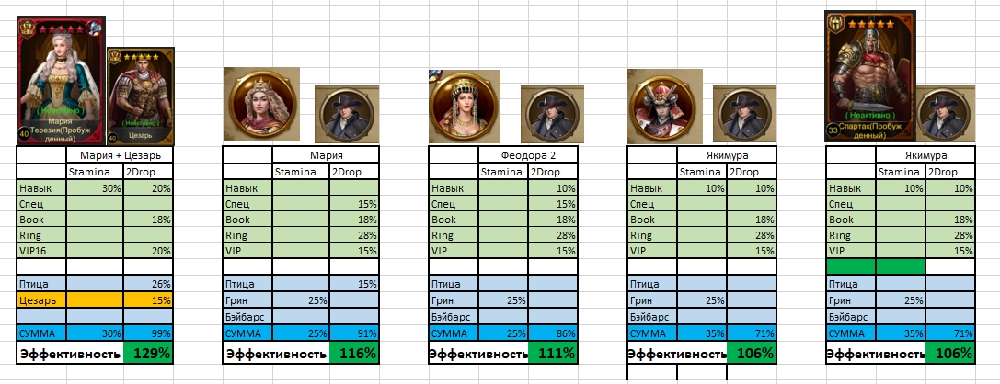
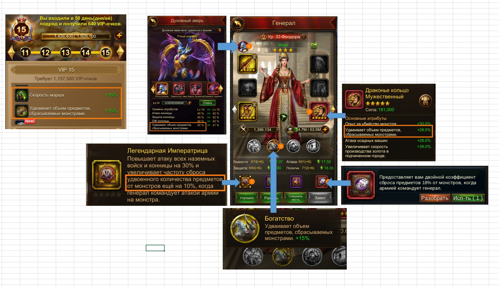

Генералы для присоединения в ралли
Готовые комбинации из вашего наброска. Stamina — бонус к экономии выносливости; 2Drop — суммарный бонус двойного дропа. «Эффективность» в таблице = Stamina + 2Drop.
Сравнение комбинаций
Для поиска используйте поле ниже. Значения переписаны со скриншота.
| Комбинация | Stamina | 2Drop | Эффективность | Что использовать |
|---|---|---|---|---|
| Мария + Цезарь из наброска | 30% | 99% | 129% | Навык 30%; Птица 26%; Цезарь 15%; + прочие источники 2Drop |
| Мария | 25% | 91% | 116% | Грин 25%; Птица 15%; Спец 15%; Book 18%; Ring 28%; VIP 15% |
| Феодора 2 | 25% | 86% | 111% | Грин 25%; Навык 10%; Спец 15%; Book 18%; Ring 28%; VIP 15% |
| Якимура | 35% | 71% | 106% | Навык 10% Stamina + 10% 2Drop; Грин 25%; Book 18%; Ring 28%; VIP 15% |
| Якимура + Спартак | 35% | 71% | 106% | В наброске итоговые суммы те же: 35% / 71% |
Как собран 2Drop
VIP 15
На скриншоте указано: удваивает объём предметов, сбрасываемых монстрами, +15%.
Богатство
На скриншоте указано: удваивает объём предметов, сбрасываемых монстрами, +15%.
Драконье кольцо
На скриншоте указано: удваивает объём предметов, сбрасываемых монстрами, +28%.
Легендарная Императрица
На скриншоте указано: повышает частоту сбора удвоенного количества предметов ещё на 10%, когда генерал командует атакой армии на монстра.
Игральная кость
На скриншоте указано: предоставляет двойной коэффициент сброса предметов 18% от монстров, когда армией командует генерал.
Духовный зверь
В блоке Феодоры на скриншоте показан бонус к удвоенному объёму предметов, сбрасываемых монстрами; итог в таблице — 86% 2Drop.
Что видно на исходных скриншотах

